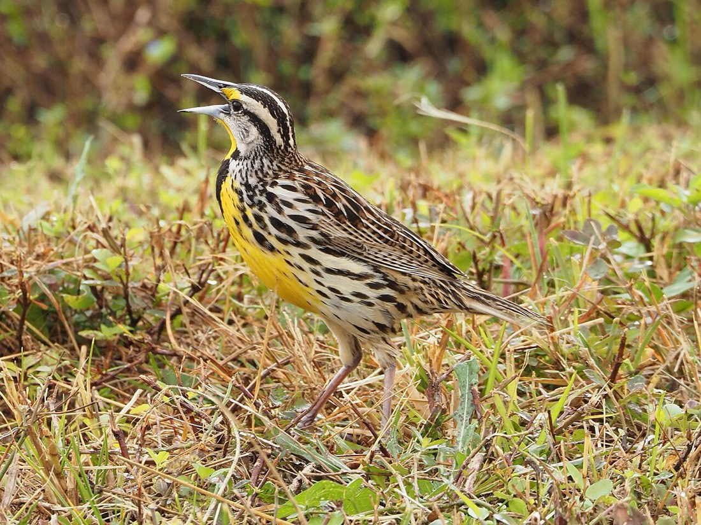

Eastern Meadowlark
Sturnella magna
- Kind
- bird
- Native to Vermont
- yes
- Legal status
- Listed as threatened in Vermont: the Atlas species index marks it "threatened - VT". The profile gives state rank S4B and the labels SGCN-M and SSC (not defined on the page); blocks occupied fell 55 percent (115 to 52) between atlases. Federal law: the Migratory Bird Treaty Act (see Legal status). (checked 2026-10-31)
- Look-alikes
- Western meadowlark (similar, slightly darker with less yellow on the face; Audubon); Chihuahuan meadowlark (recognized as distinct in 2022; Audubon)
Pictures

Names
Eastern Meadowlark, Sturnella magna.
Range and habitat
The Atlas says it nests in large fallow fields, meadows, hayfields and pastures, preferring drier sites with moderate vegetation height and density, and depends on the large, dry fields that have declined with farm abandonment and forest regrowth. The profile calls Vermont both "at the far northeastern edge" and "within the core" of its range without resolving the two. Its threats: conversion of pastures to row crops, intensified farming including earlier and more frequent mowing, and farm abandonment and reforestation.
How to identify (by season; look-alikes and the key difference)
- Size: 7.5 to 10.2 inches long (19 to 26 cm), wingspan 13.8 to 15.8 inches (Audubon).
- Marks: chunky and short-tailed, with a yellow breast marked by a black V, a streaked brown back and white outer tail feathers that flash when the bird flushes.
- Voice: a clear, mellow whistle, plus a loud rattling alarm note and a short, buzzy call.
- Look-alikes (Audubon): Western and Chihuahuan meadowlarks.
Through the year
Dates are typical for Vermont and shift with elevation and year; "approximate" means the source gave a season and the dates are a translation of it.
| When | What | Look for | What to do | Dates |
|---|---|---|---|---|
| May 8 to Jul 23 | nesting (watch) | Nests directly on the ground in large, dry fields. In Chittenden County (2003-2007, 20 nests) the earliest nest was started 8 May, the latest 11 July and the latest hatch was 23 July; mean clutch 4.25 eggs; incubation and nestling periods each averaged 12 days. | - | stated |
| Jun 1 to Jul 7 | nesting (avoid) | Do not mow or hay a nesting field in this window. Atlas management advice for grassland birds: delay cutting until at least 7 July (ideally 15 July to 1 August), or limit the first mowing to dates before 1 June and make the second no earlier than 65 days after the first. | - | stated |
Role and management
Audubon lists mostly insects in summer, and seeds and waste grain over a quarter of the annual diet. The Atlas management advice for landowners is to control woody invasive species to maintain nesting habitat, to alter mowing as in the third calendar line, and to promote structural diversity by planting a variety of grass and forb species.
Legal status
The Atlas species index labels it threatened in Vermont; that is a state listing, and the Atlas page does not cite a statute or say what it restricts. Ask the county forester or Vermont Fish & Wildlife what applies to a hayfield. Native birds are covered by the federal Migratory Bird Treaty Act, which prohibits taking (killing, capturing, selling, trading and transport are named) protected migratory birds without prior authorization (U.S. Fish and Wildlife Service page, read through a summarizing fetch 2026-10-31). The Act applies to native species named in the treaties (50 CFR 10.13); that list was not checked for this species, and the page read says nothing about nests or about cutting trees in nesting season. Ask the county forester or the Fish and Wildlife Service before work near an active nest.
Sources
- Vermont Center for Ecostudies, Vermont Breeding Bird Atlas, Eastern Meadowlark species profile: http://val.vtecostudies.org/projects/vermont-breeding-bird-atlas/eastern-meadowlark/ (read through a summarizing fetch 2026-10-31)
- Vermont Center for Ecostudies, The Second Vermont Breeding Bird Atlas (2003-2007), Eastern Meadowlark species account (two pages; read as text 2026-10-31): https://media.vtecostudies.org/wp-content/uploads/2026/08/03142420/Eastern_Meadowlark_vbba2.pdf
- National Audubon Society, Guide to North American Birds, Eastern Meadowlark: https://www.audubon.org/field-guide/bird/eastern-meadowlark (read through a summarizing fetch 2026-10-31)
- U.S. Fish and Wildlife Service, Migratory Bird Treaty Act of 1918: https://www.fws.gov/law/migratory-bird-treaty-act-1918 (read through a summarizing fetch 2026-10-31)
What this page is based on
Kind of source: mixed (the Vermont Breeding Bird Atlas profile and second-atlas account, Vermont Center for Ecostudies; Audubon's field guide, secondary)
What was read: The Vermont Breeding Bird Atlas species profile (read through a summarizing fetch) and the second Atlas species account (a two-page PDF read as text), both from the Vermont Center for Ecostudies, and the Audubon field guide page (summarizing fetch), all on 2026-10-31. Atlas dates are the earliest and latest records of each stage in Vermont during 2003-2007 (so they are stated, not translated); the Atlas pages do not define the state-rank labels. The U.S. Fish and Wildlife Service Migratory Bird Treaty Act page was read the same way. Pictures: the Wikimedia Commons description and the photo itself were looked at.
Last checked: 2026-10-31
Vermont land and forest reference, built 2026-10-31. Rules and dates here are summaries, not legal advice; dates shift with elevation and year. Photo credits · Note: _reference/US-VT/Species/Eastern Meadowlark.md